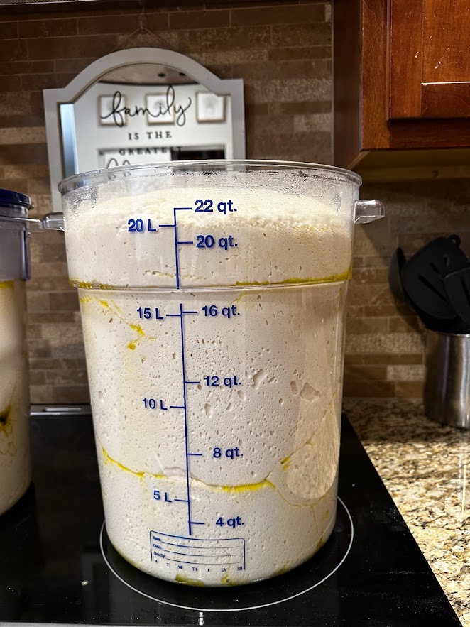

The Rise
There are two main proofs that should happen with a sourdough bake. The first is just after the original mix. This is usually between an hour and a half to two hours. This is really for the yeast to react with the dough, so no more than that. The second is an over-night or 8-hours in the refrigerator. This allows the bacteria to to their magic while the yeast is subdued.